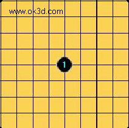
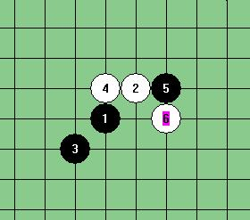
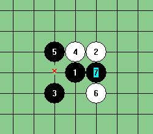

五子棋教室
#1 奇异视角下的五子棋（3）——关于五子棋的不确定性作者：岳麓小棋后 发表时间：2009-4-30 7:06:04
为什么有禁规则下的五子棋相对更好点？边线黑天鹅的出现挑战传统的五子棋认知？先入为主观念灌输的我们还能看清五子棋似是而非的面庞吗？最初的感觉错了吗？学棋学什么？
相信很多人都有过这样的困惑，一步棋明明看过去很舒服，结果却是必败；一步棋莫名其妙，结果却是另人大跌眼镜的必胜，这样的怪事在15路盘RIF规则下的五子棋里几乎比比皆是。
到现在还没有人能准确解释为什么RIF下的瑞星定式会是这个样子的，这就好象数学史上不可证明的欧几里得平行公理一样，是个客观存在，或者说它是不可推理出来的，它是“算”出来的，时间沉淀下来的变化。

瑞星定式也许比较简单，我们再来看个欺瞒世人更久的斜月一打老变化，来反证这个的确不是“人脑可以提前预知可以推出来的玩意”。

再来看个斜月二打的7手，

你也许不相信，但是在这个6手没被地毯胜前，这个白6手一度被认为是#2 Re:奇异视角下的五子棋（3）——关于五子棋的不确定性作者：吐血刀 发表时间：2009-4-30 7:18:27奇异视角下的五子棋1.2.3.建议楼主辛苦下，合并在一个主题帖子里。该系列文章有较大的技术价值。#3 Re:奇异视角下的五子棋（3）——关于五子棋的不确定性作者：盖世英雄 发表时间：2009-4-30 16:57:23就喜欢这些学术性的文章 真精彩 学习拉 #4 Re:Re:奇异视角下的五子棋（3）——关于五子棋的不确定性作者：岳麓小棋后 发表时间：2009-4-30 17:10:15#5 Re:奇异视角下的五子棋（3）——关于五子棋的不确定性作者：可乐可口 发表时间：2009-4-30 22:06:07很好很强大不过斜月老定式那图明显错了，白14J8直接杀了#6 Re:奇异视角下的五子棋（3）——关于五子棋的不确定性作者：刀魂 发表时间：2009-4-30 22:08:57哪来 那么多 理论啊。。。多砍几把 就是了#7 Re:奇异视角下的五子棋（3）——关于五子棋的不确定性作者：可乐可口 发表时间：2009-4-30 22:09:124楼的听不了，系统提示什么RealPlayer有问题，郁闷#8 Re:奇异视角下的五子棋（3）——关于五子棋的不确定性作者：非鸟 发表时间：2009-4-30 23:14:33真复杂要慢慢看#9 Re:奇异视角下的五子棋（3）——关于五子棋的不确定性作者：小红眼镜 发表时间：2009-5-1 1:02:56大半夜正看着帖子，突然响起音乐来，吓了一大跳。。。。#10 Re:奇异视角下的五子棋（3）——关于五子棋的不确定性作者：wd1988 发表时间：2009-5-2 16:47:13可乐可口说得对，确实杀了，在19路和15路棋盘下，白14都杀了=======上图对应的爱五子棋谱代码如下，以便你拆解：========h8i9g7h9g9i7g8g6i8f8e10g11d9j8======================================================这个14，在15路和19路下，白都杀了#11 Re:奇异视角下的五子棋（3）——关于五子棋的不确定性作者：厦门小天 发表时间：2009-5-3 0:20:4210楼黑4要先冲了，我草稿里打错了。 另小棋后发草稿也先给我留个言啊，呵呵。#12 Re:奇异视角下的五子棋（3）——关于五子棋的不确定性作者：小天元子 发表时间：2009-6-22 13:11:32该我道歉才对，因为例子未能及时消化，没能在征文截稿前发上来，耽误了发稿日期；发上来还是在例子上出问题了，呵呵#13 Re:奇异视角下的五子棋（3）——关于五子棋的不确定性作者：游吟乐者 发表时间：2009-6-25 1:35:53哈哈，遇知己不易，不过文章作者看来在瓶颈的广阔平原上并没有迷路，不像自以为是的我，对你表示敬意，你的境界还会再高的，确定性的无趣的确让人很无助，但是不确定性却不是归处，因为我可以告诉你，其实有一种办法可以将这些不确定性也变为确定性，这很无趣，我知道，但是当时的我却没办法抵住征服它的欲望，开始研究并不断的演算将各种不确定性变为确定性方法，不过当我得知这个方法的可能性后，就选择了离开这个领域，因为一旦那样真的就太无趣了，而这一去今天才回来，发现江湖已不是我原来认识的那个地方，不进则退让我此时更加兴奋，今天第一次来，就发现了你的这个文章，感觉非常好，我可以告诉你，虽然我认为那个方法是旁门左道，但是经你这么一分析，我发现原来它也是这么有技术价值，我为他命名为“诱心术”，是从围棋中悟出的道理，这个方法不是简单的棋型定式，也不是什么阵法，而是一种算出各种不确定性后，并有意图的进行行棋的技术，其中的要点就是摆脱经验和定式的束缚，并将此加以利用，单靠适时的落子来帮助对手自己选择死亡的方式，虽然成功率到我因为厌倦而离开这个领域时还很低，但是今天我决定将他研究完，谢谢你的文章，让我提起兴趣和勇气去往无趣的归处。。。。。。（还是觉得有点悲惨，但还是抵抗不了征服它的欲望）希望有机会我们能坐下来切磋，比起15*15的无趣归途，我还是更愿意探讨它，棋理如人生啊。引用个名人名言，“我们不是已经死亡，就是还正走在通往死亡的道路上”，归途是什么不重要，死亡也并不代表完结，而只是另一个开始，所以无趣的归途也许也是另一片领域的开始（我现在就只能这么开导自己了）~~~~！ ［ 茗弈小刀 于 2009-6-25 21:40:05 时花20金币送鲜花一朵］#14 Re:奇异视角下的五子棋（3）——关于五子棋的不确定性作者：则卷 发表时间：2009-6-25 12:39:20比起楼主的文章，楼上的文字更让人有种飘的感觉。能否把你的研究发上来供大伙观摩一下#15 Re:奇异视角下的五子棋（3）——关于五子棋的不确定性作者：小天元子 发表时间：2009-6-25 13:07:4813L的太火星了，话说常胜将军存在吗？如果真有这条捷径，……#16 Re:奇异视角下的五子棋（3）——关于五子棋的不确定性作者：游吟乐者 发表时间：2009-6-25 20:05:39呵呵，楼主纠正你一个错误，其实这不是什么捷径，反而是更难的一个领域，如果有捷径我早就走了，哎，什么事情都是没有捷径的，如果大家真的感兴趣，我可以给大家一个切入点，大家根据这个思路，应该就明白我说的“诱心术”到底是什么了，我上面也提到了我是在围棋中悟出的这个道理，因为围棋的19*19棋盘，所以我认为打围棋诞生的一开始，就注定了这是一个战略对战略的游戏，因为棋盘如此之大，所以每一个落子就更加需要有战略思维指导，尤其是开局，所以我建议大家如果想下好五子棋，可以去接触一下围棋，潜移默化中去找一些启示，好，开始进入正题，就像楼主的文章中说的那样，引用一下 “传统的五子棋认知,虽然五子棋有很多东西是确定的，但我们依然没有绝对的预知能力（终结五子棋的除外），然而我们（包括我）却常常基于对先手与棋形等棋理的认识尝试预测五子棋并忽略不确定性的存在” 所以大多数情况下，人们总是爱以先手的优势着手来对待五子棋，并且沿着这个思路走下去的，即使有人研究后手的人，也大多是围绕在研究其以守为攻的战略思维里做文章，当然你也说了，是大多数情况下，也有少数人，并没有按照这个思路走下去，比如说我，我生来就对所有事物抱有怀疑的态度，世上没有什么不可能的东西，当然除了不可能本身，好了，废话就这么多.现在给大家一个切入点，举个简单的例子，就是关于任何一方在成三的情况下，另一方的思维判断，简单的说，就是对于会堵住那一边都各有50%的概率，对吧？（当然概率远远不只这么简单，要考虑的东西还很多，比如对方对于落子落那边的价值判断，对方的战略意图是什么等等，我就不做过多的赘述，作为切入点，简单点大家比较能够理解，目的是抛砖引玉）那么设想一下，如果该落子的一方的下一步行动已经被另一方控制，那么后面的事情会是什么结果？有禁手的最大不确定性就是其规则，而一个熟知规则，对先手的所有定式也好，阵法思路也罢，都了如指掌的后手而言，如果可以指挥先手，那会是什么样的情况，呵呵，引导对方不得不禁手，不禁手，就会输，出禁手也是输，（当然是说有禁规则下的对弈，不然谁理你，呵呵）这个的确有点摧残对方心灵的意图，所以我说这是旁门左道，之所以我会起名为“诱心术”就是源于此，这个技术是我原来对于后手的有别于别人做的一种尝试，人的表情，言语都是可以骗人的，但是动作却不行，任何动作都是一种内心的表达，而且还骗不了人，只要对方是人类（如果是电脑就更简单了，只要推算出电脑的计算概率和行棋的模式就可以将其KO）就很难走出某些定式和经验的束缚，但也正是这一点，所以楼主对常胜将军这个词很难以置信啊。。。。。。如果掌握了这个技术（也就是将判断对手的落子概率提到相当高的地步）并且将其用于先手，那会是什么样呢？。。。。。。［ 茗弈小刀 于 2009-6-25 21:38:45 时奖励此帖[金币加 20 威望加1］#17 Re:奇异视角下的五子棋（3）——关于五子棋的不确定性作者：小天元子 发表时间：2009-6-25 20:08:42理解不来，还是很火星#18 Re:奇异视角下的五子棋（3）——关于五子棋的不确定性作者：游吟乐者 发表时间：2009-6-25 21:18:17=======上图对应的爱五子棋谱代码如下，以便你拆解：========h8i8i9j10g9h10f10i7f9h9f8f11g10h11e10i11e11d12h12i10j11f7======================================================我不太会用这个作图，有好几个分支需要做上来，先发个实验#19 Re:奇异视角下的五子棋（3）——关于五子棋的不确定性作者：游吟乐者 发表时间：2009-6-25 21:22:18小天在不，我想听听你对这个局势的见解，想说什么都行~！#20 Re:奇异视角下的五子棋（3）——关于五子棋的不确定性作者：厦门小天 发表时间：2009-6-26 10:30:51 首先希望楼上发文字前整理下段落语句。 阅读后，觉得楼上要表达的“诱心术”是属于博弈竞技，战略战术范畴。它长期广泛地存在于各行各业各个领域。附：博弈又称对弈、对策，博弈原理说的是每个对弈者在决定采取何种行动时，不但要根据自身的利益和目的行事，同时也要考虑到他的决策行为对其他人的可能影响，以及其他人的行为对他的可能影响，通过选择最佳行动计划，来寻求收益或效用的最大化。也就是说，要在对方采取什么策略的估计基础上选择自己的恰当策略。 若要了解“诱心术”，个人推荐打牌（简单，娱乐，省时）。比如 斗地主，大鱼常开玩笑说跟他斗地主的都会很郁闷，没打几轮就能把别人的牌猜个7788，有次直接告诉我剩张K跟A，明着跟我打…… 还有升级（又名80分，拖拉机等），猪猪的升级相传已经近神，随便个搭档打几轮能把牌猜个89不离10。 这不仅仅是计算力强，更重要的是善于分析出牌意图(现实玩还可以分析肢体语言)。 五子棋博弈乐趣由来已久，几年前跟大鱼聊天，他谈到ANDO跟中村，曾提到ANDO的棋更倾向于技术流，追求每手棋的最强；而中村的棋往往没有必胜，但对手却常常自觉走到必败点去，中村了解对手引导(诱导)的结果. 建议楼主查阅 08年全国五子棋团体赛 大鱼白对樊星岑那泣鬼神的大翻盘,战略成功的经典对局.=======上图对应的爱五子棋谱代码如下，以便你拆解：========h8h9j10i9i10g10g9j8h10i11i8i7k9k10g6h7j7f11h5h11g11i12j13j11h13l11k11m12n13l12l10j12k12l14l15k13m15m11j14f12e8f7i6k8====================================================== 这盘前几天本人根据朋友的性格设计的骗,果然黑毫不犹豫活了这个3. 最后,可能是我原文表述不当,使楼上有这么个想法,认为: 我发现五子棋确定性→觉得五子棋无趣→研究五子棋的不确定性→让五子棋变成有趣. 假如楼上是这么理解我只好说抱歉,我做此主要目的是指出大多棋手思维上存在的不可避免或者说难以避免的盲区.（另外文中的“无趣”的意思不是指整个五子棋无趣）附:不确定性是指:事先无法或难以预测,事后可发现.所以我们肯定能将某一个不确定的变化变成确定性的,但在研究清楚下一个不确定的变化前,我们能精确预测吗？混沌依然存在,假如硬要把混沌弄清楚,那么混沌就死了. #21 Re:奇异视角下的五子棋（3）——关于五子棋的不确定性作者：小天元子 发表时间：2009-6-26 10:48:35北冥有鱼，其名为鲲。鲲之大，不知其几千里也。化而为鸟，其名为鹏。鹏之背，不知其几千里也。怒而飞，其翼若垂天之云。一笑而过，温故经典，不确定就像那鲲鹏一样，确定的是我们的走法，所谓逍遥游者。如何逍遥是一回事，怀着逍遥的心却是可达到的。#22 Re:奇异视角下的五子棋（3）——关于五子棋的不确定性作者：游吟乐者 发表时间：None 呵呵，所以我说你并没有迷路，不像我，人的认知决定行为，而行为决定归途。你把“诱心术”理解成博弈是完全正确的，小天你上午发的那个棋局我也看了，认为是个不错的“博弈”对战，双方棋风都非常稳健，而且战略意图清晰，但是我也说了，这种只是博弈，都是为了单纯的胜利而进行的各种“真大光明”的对弈，而我要说的就是这一点，就是博弈更多的目的是为了单纯的胜利，而我之所以取之“诱心”就是因为它的目的不仅如此，如果说欺骗是无意识的或者小部分有意识的，那么还可以原谅，但是如果是大部分有意识的呢？如果是从始至终都是有意识而且通过计算后实施的呢？而且欺骗的目的还不是为了胜利，只是为了寻求和诱导让对方自杀的情况呢？那就可以用无耻来形容了，每个不确定性有一个算一个，全都进入到整个的计算中来，而且还是以这个为主导思想来进行的博弈，这个就是诱心术的全部面貌，所以当骗不是为了赢，而是为了在赢的基础上在心灵上对对手的蹂躏与摧残，这就是不可原谅的了，所谓旁门左道也是指这个，中村的报道和棋局我看了一下，我认为就像你说的，他是走的博弈味很浓的道路，而且这样我认为才是伟大的，因为对于我们每个个体而言，都是独一无二的，都有自己的认知与思维，而在“棋”这个双方对战的游戏中，要想对每个个体都能赢，最上乘的办法就是把自己变成“无”（之所以上乘，是因为这种办法绝对要比“必胜”或者其他办法更难，也不容易破），即在面对每个人的时候自己都是新的，没有定式，只有有随机应变，根据不同的棋路走不同的棋路，这样才有可能成为真正的常胜或者胜多败少。好了，我来用棋局来阐述一下我的意思，我昨天发的那个棋局是无数种可能性中的一种，而且是最简单的一种，因为将黑棋的棋风与性格设定的很草率和单纯，因为这样大家能够更直接清晰的看到诱心术的意图和方法，如图：=======上图对应的爱五子棋谱代码如下，以便你拆解：========h8i8i9j10g9h10f10i7f9h9f8f11g10h11e10i11e11d12h12i10j11f7====================================================== 这一局，我要说的是白24会下E6的可能性是80%（概率是基于黑的下一步走法），无论黑怎么进攻，都是黑必输（而且是越想赢越必输），而如果防守那么也只是将输棋的时间延后（根据设定的黑棋棋风判定）关于黑第23步的下法，如果还是按照草率的棋风下的话，诱心术就可以更清晰的展现到大家面前，但是如果是你会怎么下？。。。。。。 其实黑第11手的落子，就已经暴露了，白按照适时下子引导对方的原则，将黑棋赶到一处，我想这是很多棋手都不会像遇到的情况，也是不愿意让对方形成的局势，但是诱心术的第一步就是充分利用“想赢”的欲望，将对手至于死地，而让白陷入看似比较被动的行棋方法也是整个战略的第一步（其实到这里叫博弈就很贴切了，在“棋”之外的“牌”的世界里，这个也许就是叫“飞仙局”吧），当到白22手，也就是大家看到是这个局势的时候，请大家看黑棋有几个禁手点？ 是3个，那么剩下的就是将这3个禁手点利用一下就好了（因为现在可以利用的还只能体现在禁手上，而后期的边线问题，就像小天说的即使考虑到了也不一定就是那样，因为要判断的东西太多，自我调节，对方动作分析，根据分析结果进行行为诱导的成功率，主要决定于基于对方棋风与性格对自身每一步落子的价值判断和局势分析，对方的防守分析，by:web版 IP： 已记录#23 Re:奇异视角下的五子棋（3）——关于五子棋的不确定性作者：小天元子 发表时间：2009-6-26 21:54:48我们的目标是一致的，不过小棋后更唯物，小棋后也追求完美五子，也在努力探寻各种必胜型背后的一般规律，对于你们实战的，当然还要加上对手、状态、心理等棋盘外的因素，单从棋盘上的因素来说，或许那条“捷径”是不存在的，到目前为止，我还是持否定态度的，但是一些大的基础性原则还是可以确定的，比如四不能乱冲，再深点会发现三也不能乱活，否则一样是为了别人等着做棋，比如对方有一大堆进攻材料在边角，如果空间不够，是大可不必防的，再比如后中先战术等等，当然如果加上棋盘外的因素，这条捷径或许就“存在”了。美国小说家爱伦坡的小说里记载了一件事，说有一小孩猜硬币正反面很正确，问他诀窍，他说只要观察你的眼神就知道答案是正面还是反面了，这就是实战。如果过程比结果更精彩的话，希望五子棋能在这条路上“挣扎”更长时间，当然我现在的看法是终结不了。#24 Re:奇异视角下的五子棋（3）——关于五子棋的不确定性作者：唐锦荣 发表时间：2009-7-12 16:54:25黑棋先手冲后在走D9#25 Re:奇异视角下的五子棋（3）——关于五子棋的不确定性作者：唐锦荣 发表时间：2009-7-12 17:42:21太玄，下棋的目的是啥？就像问人活着为嘛？答案千万。最后的目的还是获胜。不要将简单问题复杂化，那样人会生精神病的。#26 Re:奇异视角下的五子棋（3）——关于五子棋的不确定性作者：唐锦荣 发表时间：2009-7-12 17:45:26在黑落子的7个可能点上，只有1个是最有价值的，就是G12，出了这个点是最完美的防守外，其他无一例外会在3步之内败北。相信作者会有妙手解开G12的攻防？否则说半天等于0.绕了半天自己先跳进火坑里了。#27 Re:奇异视角下的五子棋（3）——关于五子棋的不确定性作者：唐锦荣 发表时间：2009-7-12 18:06:58在黑落子的7个可能点上，只有1个是最有价值的，就是G12，出了这个点是最完美的防守外，其他无一例外会在3步之内败北。作者一定想好了，对于这个G12接下来该如何蹂躏黑方了？#28 Re:奇异视角下的五子棋（3）——关于五子棋的不确定性作者：游吟乐者 发表时间：2009-7-13 1:35:54 呵呵，前一阵很忙，再加上一直也没人来探讨我上面的棋局，所以一直也没上来，刚才有人终于提出了疑问，下面我来一一解答： 下棋的目的是啥，其实就是一种娱乐，一种释放，一种脱离出工作的休闲活动，换句话也就是说，它应该是脱离现在社会的偏激且单一的价值认可外的一种活动，再直白点就是下棋不是为了挣钱（反正我是这么认为的，如果下棋的目的是挣钱，那么我宁可不下，因为挣钱的途径已经很多了，如果下棋都沦落为谋生的手段，那我就还得找个其他的途径释放了）~！在这一前提下，我认为怎么理解下棋的目的都是无可厚非的，也都是可以理解的，我就是把下棋当成类似战争的游戏，因为我不会去打仗，也不会变成军师，但是我就像过过这个隐，就因为这样，就得通过某一个途径来实现，我想这样不会有到变成精神病的危险吧~！呵呵~！下棋如果遇到好的对手，要比玩网络游戏过瘾，下棋也可以当做是学会对人生的一种解读，比如小天元子说的，“比如四不能乱冲，再深点会发现三也不能乱活，否则一样是为了别人等着做棋，比如对方有一大堆进攻材料在边角，如果空间不够，是大可不必防的”，因为受过伤，所以发现事情是这样的，疼过了才能叫真懂~！人生不也是这样吗，四不能乱冲，就像便宜不能随便占，再深入点发现三都不能乱活，想成功哪怕你只露出一点妨碍别人的地方都会遭到意想不到的打击，等等，不都是生活吗，唐锦荣说问下棋的目的是什么，和问活着为了什么一样，这个理解很正确，其实他们就是一个问题~！问题在于---问题本身---本身就不是重点，也就是说问题不是用来问的，而是用来答的~！而说最后都是为了获胜，其实这只是答案的一部分，我下棋的目的在上篇中已经说了，“诱心术”就是为了达到我的目的的一种方法，即使是输，我也会很开心的，在对弈中了解我的对手，分析我的对手，一旦他没有脱离我的计算，是按照我的想法下棋的话，那我就已经很满足了，就已经达到了我下棋的目的，呵呵，现在的我不能将小棋后说的“混沌”致死，所以失败是难免的，输也是难免的，因为很多东西是很难计算的，但是这些都是次要的，因为我的目的达到了，答案万千，其实答案只有一个，就是为了“满足”，输和赢一样是为了满足，只不过一个是为了过程一个是为了结果。。。。。。 其实黑如果下G12，我并没有什么所谓的破解之法（因为“破解”是为了“赢”而产生的关联词汇，不为了输赢，就没有什么破解不破解的了，有的只是满不满足），如果只是为了赢的话，不管黑下那里白只要在黑没有成三的情况下走J9（如果黑没走G12）或者H7就行了，但是要是黑成三了（包括为了形成三四的成三，比如黑先D10冲，后G13成三，再G11形成三四绝对先手），白就都下E6,逼对方禁手，禁手是输，不禁手也是输，如果是这样，就实现了蹂躏对手的目的也实现了诱心术的目的。但如果黑走了G12，而且白还不下H7，那白输的可能性就到了80%甚至更高，因为黑的优势太多了，在这个棋局中白因为用了“诱心术”，所以到这里一旦诱心术没有成功（也就是黑走G12或者G7，将马上不利的禁手点废掉就像为了保命自己砍掉自己中毒后的臂膀），白再不下H7，就绝对无力回天了，我管这种情况叫“诱心术-反噬”（有个名称不就显的酷一些吗，呵呵，为形成理论做点准备），唐锦荣问的如果黑下G12(其实G7也跟G12一样算废禁手点的好棋，攻守兼备，我说G12更好一些是因为这样黑赢的机会更多一些)下一步蹂躏对手的办法是什么，就是执白防守黑棋的进攻，而后下了H7再下K10而不赢，也就是在优势的态势下反而防守，将几个最险恶的点堵上（这样是为了下一步展现“诱心术”，为了有更多的跟对手接触，让他更多的满足我下棋的目的，但是我也说了，输的可能性很高，可能性是根据对手来的）如果这样就有更多的空间可以迂回了，也就有可能能下到棋局的后期，到了边缘问题比较多的时候就可以实现强大的“诱心术-完胜”的格局了（中期每一步都为了让对手留下点边缘问题，最后就像玩拼图一样，问题+问题=灾难）这个也就是我说的诱心术的全貌了，哎，如果我能做到让对手的每一步都在我的计划内（现在顶多也就是45%-60%的成功率，因为每一个对手都是独一无二的啊，这一点非常好，呵呵），那即使没有赢，我也已经获得莫大的满足了，我的下期目的也就达到了顶峰了。。。。。。附：黑棋的禁手：只要黑下一子黑形成的格局中包含三三，四四，长连（超过5个子连在一起）均为禁手，即判白胜； 白棋的禁手：无 我这些天没事时整理资料，发现其实我的诱心术，早就有人研究过，连学名都有了，叫“追下取胜”俗称“促禁手”，但是那些文献和#29 Re:奇异视角下的五子棋（3）——关于五子棋的不确定性作者：许相公 发表时间：2009-7-19 17:46:53能不能请小天具体说一下五子棋或连珠当中的不确定性？按照我的理解，三三和四四，四三同样存在必胜的手段，要想阻止先行的黑棋必胜就得把所有的连接手段全都加上禁手才行。单单四三不加禁手，哪黑棋可以不用去管其他的那些禁手，只需要找到在四三的情况下最短的取胜手顺就行了
#2 Re:奇异视角下的五子棋（3）——关于五子棋的不确定性作者：吐血刀 发表时间：2009-4-30 7:18:27
#3 Re:奇异视角下的五子棋（3）——关于五子棋的不确定性作者：盖世英雄 发表时间：2009-4-30 16:57:23
就喜欢这些学术性的文章 真精彩 学习拉
#4 Re:Re:奇异视角下的五子棋（3）——关于五子棋的不确定性作者：岳麓小棋后 发表时间：2009-4-30 17:10:15
#5 Re:奇异视角下的五子棋（3）——关于五子棋的不确定性作者：可乐可口 发表时间：2009-4-30 22:06:07
很好很强大
不过斜月老定式那图明显错了，白14J8直接杀了
#6 Re:奇异视角下的五子棋（3）——关于五子棋的不确定性作者：刀魂 发表时间：2009-4-30 22:08:57
#7 Re:奇异视角下的五子棋（3）——关于五子棋的不确定性作者：可乐可口 发表时间：2009-4-30 22:09:12
#8 Re:奇异视角下的五子棋（3）——关于五子棋的不确定性作者：非鸟 发表时间：2009-4-30 23:14:33
真复杂要慢慢看
#9 Re:奇异视角下的五子棋（3）——关于五子棋的不确定性作者：小红眼镜 发表时间：2009-5-1 1:02:56
大半夜正看着帖子，突然响起音乐来，吓了一大跳。。。。
#10 Re:奇异视角下的五子棋（3）——关于五子棋的不确定性作者：wd1988 发表时间：2009-5-2 16:47:13
可乐可口说得对，确实杀了，在19路和15路棋盘下，白14都杀了
这个14，在15路和19路下，白都杀了
#11 Re:奇异视角下的五子棋（3）——关于五子棋的不确定性作者：厦门小天 发表时间：2009-5-3 0:20:42
10楼黑4要先冲了，我草稿里打错了。 另小棋后发草稿也先给我留个言啊，呵呵。
#12 Re:奇异视角下的五子棋（3）——关于五子棋的不确定性作者：小天元子 发表时间：2009-6-22 13:11:32
该我道歉才对，因为例子未能及时消化，没能在征文截稿前发上来，耽误了发稿日期；发上来还是在例子上出问题了，呵呵
#13 Re:奇异视角下的五子棋（3）——关于五子棋的不确定性作者：游吟乐者 发表时间：2009-6-25 1:35:53
哈哈，遇知己不易，不过文章作者看来在瓶颈的广阔平原上并没有迷路，不像自以为是的我，对你表示敬意，你的境界还会再高的，确定性的无趣的确让人很无助，但是不确定性却不是归处，因为我可以告诉你，其实有一种办法可以将这些不确定性也变为确定性，这很无趣，我知道，但是当时的我却没办法抵住征服它的欲望，开始研究并不断的演算将各种不确定性变为确定性方法，不过当我得知这个方法的可能性后，就选择了离开这个领域，因为一旦那样真的就太无趣了，而这一去今天才回来，发现江湖已不是我原来认识的那个地方，不进则退让我此时更加兴奋，今天第一次来，就发现了你的这个文章，感觉非常好，我可以告诉你，虽然我认为那个方法是旁门左道，但是经你这么一分析，我发现原来它也是这么有技术价值，我为他命名为“诱心术”，是从围棋中悟出的道理，这个方法不是简单的棋型定式，也不是什么阵法，而是一种算出各种不确定性后，并有意图的进行行棋的技术，其中的要点就是摆脱经验和定式的束缚，并将此加以利用，单靠适时的落子来帮助对手自己选择死亡的方式，虽然成功率到我因为厌倦而离开这个领域时还很低，但是今天我决定将他研究完，谢谢你的文章，让我提起兴趣和勇气去往无趣的归处。。。。。。（还是觉得有点悲惨，但还是抵抗不了征服它的欲望）希望有机会我们能坐下来切磋，比起15*15的无趣归途，我还是更愿意探讨它，棋理如人生啊。引用个名人名言，“我们不是已经死亡，就是还正走在通往死亡的道路上”，归途是什么不重要，死亡也并不代表完结，而只是另一个开始，所以无趣的归途也许也是另一片领域的开始（我现在就只能这么开导自己了）~~~~！
［ 茗弈小刀 于 2009-6-25 21:40:05 时花20金币送鲜花一朵］
#14 Re:奇异视角下的五子棋（3）——关于五子棋的不确定性作者：则卷 发表时间：2009-6-25 12:39:20
比起楼主的文章，楼上的文字更让人有种飘的感觉。能否把你的研究发上来供大伙观摩一下
#15 Re:奇异视角下的五子棋（3）——关于五子棋的不确定性作者：小天元子 发表时间：2009-6-25 13:07:48
#16 Re:奇异视角下的五子棋（3）——关于五子棋的不确定性作者：游吟乐者 发表时间：2009-6-25 20:05:39
呵呵，楼主纠正你一个错误，其实这不是什么捷径，反而是更难的一个领域，如果有捷径我早就走了，哎，什么事情都是没有捷径的，如果大家真的感兴趣，我可以给大家一个切入点，大家根据这个思路，应该就明白我说的“诱心术”到底是什么了，我上面也提到了我是在围棋中悟出的这个道理，因为围棋的19*19棋盘，所以我认为打围棋诞生的一开始，就注定了这是一个战略对战略的游戏，因为棋盘如此之大，所以每一个落子就更加需要有战略思维指导，尤其是开局，所以我建议大家如果想下好五子棋，可以去接触一下围棋，潜移默化中去找一些启示，好，开始进入正题，就像楼主的文章中说的那样，引用一下 “传统的五子棋认知,虽然五子棋有很多东西是确定的，但我们依然没有绝对的预知能力（终结五子棋的除外），然而我们（包括我）却常常基于对先手与棋形等棋理的认识尝试预测五子棋并忽略不确定性的存在” 所以大多数情况下，人们总是爱以先手的优势着手来对待五子棋，并且沿着这个思路走下去的，即使有人研究后手的人，也大多是围绕在研究其以守为攻的战略思维里做文章，当然你也说了，是大多数情况下，也有少数人，并没有按照这个思路走下去，比如说我，我生来就对所有事物抱有怀疑的态度，世上没有什么不可能的东西，当然除了不可能本身，好了，废话就这么多.现在给大家一个切入点，举个简单的例子，就是关于任何一方在成三的情况下，另一方的思维判断，简单的说，就是对于会堵住那一边都各有50%的概率，对吧？（当然概率远远不只这么简单，要考虑的东西还很多，比如对方对于落子落那边的价值判断，对方的战略意图是什么等等，我就不做过多的赘述，作为切入点，简单点大家比较能够理解，目的是抛砖引玉）那么设想一下，如果该落子的一方的下一步行动已经被另一方控制，那么后面的事情会是什么结果？有禁手的最大不确定性就是其规则，而一个熟知规则，对先手的所有定式也好，阵法思路也罢，都了如指掌的后手而言，如果可以指挥先手，那会是什么样的情况，呵呵，引导对方不得不禁手，不禁手，就会输，出禁手也是输，（当然是说有禁规则下的对弈，不然谁理你，呵呵）这个的确有点摧残对方心灵的意图，所以我说这是旁门左道，之所以我会起名为“诱心术”就是源于此，这个技术是我原来对于后手的有别于别人做的一种尝试，人的表情，言语都是可以骗人的，但是动作却不行，任何动作都是一种内心的表达，而且还骗不了人，只要对方是人类（如果是电脑就更简单了，只要推算出电脑的计算概率和行棋的模式就可以将其KO）就很难走出某些定式和经验的束缚，但也正是这一点，所以楼主对常胜将军这个词很难以置信啊。。。。。。如果掌握了这个技术（也就是将判断对手的落子概率提到相当高的地步）并且将其用于先手，那会是什么样呢？。。。。。。
［ 茗弈小刀 于 2009-6-25 21:38:45 时奖励此帖[金币加 20 威望加1］
#17 Re:奇异视角下的五子棋（3）——关于五子棋的不确定性作者：小天元子 发表时间：2009-6-25 20:08:42
#18 Re:奇异视角下的五子棋（3）——关于五子棋的不确定性作者：游吟乐者 发表时间：2009-6-25 21:18:17
我不太会用这个作图，有好几个分支需要做上来，先发个实验
#19 Re:奇异视角下的五子棋（3）——关于五子棋的不确定性作者：游吟乐者 发表时间：2009-6-25 21:22:18
#20 Re:奇异视角下的五子棋（3）——关于五子棋的不确定性作者：厦门小天 发表时间：2009-6-26 10:30:51
首先希望楼上发文字前整理下段落语句。
阅读后，觉得楼上要表达的“诱心术”是属于博弈竞技，战略战术范畴。它长期广泛地存在于各行各业各个领域。
附：博弈又称对弈、对策，博弈原理说的是每个对弈者在决定采取何种行动时，不但要根据自身的利益和目的行事，同时也要考虑到他的决策行为对其他人的可能影响，以及其他人的行为对他的可能影响，通过选择最佳行动计划，来寻求收益或效用的最大化。也就是说，要在对方采取什么策略的估计基础上选择自己的恰当策略。
若要了解“诱心术”，个人推荐打牌（简单，娱乐，省时）。比如 斗地主，大鱼常开玩笑说跟他斗地主的都会很郁闷，没打几轮就能把别人的牌猜个7788，有次直接告诉我剩张K跟A，明着跟我打…… 还有升级（又名80分，拖拉机等），猪猪的升级相传已经近神，随便个搭档打几轮能把牌猜个89不离10。 这不仅仅是计算力强，更重要的是善于分析出牌意图(现实玩还可以分析肢体语言)。
五子棋博弈乐趣由来已久，几年前跟大鱼聊天，他谈到ANDO跟中村，曾提到ANDO的棋更倾向于技术流，追求每手棋的最强；而中村的棋往往没有必胜，但对手却常常自觉走到必败点去，中村了解对手引导(诱导)的结果.
建议楼主查阅 08年全国五子棋团体赛 大鱼白对樊星岑那泣鬼神的大翻盘,战略成功的经典对局.
这盘前几天本人根据朋友的性格设计的骗,果然黑毫不犹豫活了这个3.
最后,可能是我原文表述不当,使楼上有这么个想法,认为: 我发现五子棋确定性→觉得五子棋无趣→研究五子棋的不确定性→让五子棋变成有趣.
假如楼上是这么理解我只好说抱歉,我做此主要目的是指出大多棋手思维上存在的不可避免或者说难以避免的盲区.（另外文中的“无趣”的意思不是指整个五子棋无趣）
附:不确定性是指:事先无法或难以预测,事后可发现.所以我们肯定能将某一个不确定的变化变成确定性的,但在研究清楚下一个不确定的变化前,我们能精确预测吗？混沌依然存在,假如硬要把混沌弄清楚,那么混沌就死了.
#21 Re:奇异视角下的五子棋（3）——关于五子棋的不确定性作者：小天元子 发表时间：2009-6-26 10:48:35
北冥有鱼，其名为鲲。鲲之大，不知其几千里也。化而为鸟，其名为鹏。鹏之背，不知其几千里也。怒而飞，其翼若垂天之云。
一笑而过，温故经典，不确定就像那鲲鹏一样，确定的是我们的走法，所谓逍遥游者。如何逍遥是一回事，怀着逍遥的心却是可达到的。
#22 Re:奇异视角下的五子棋（3）——关于五子棋的不确定性作者：游吟乐者 发表时间：None
呵呵，所以我说你并没有迷路，不像我，人的认知决定行为，而行为决定归途。你把“诱心术”理解成博弈是完全正确的，小天你上午发的那个棋局我也看了，认为是个不错的“博弈”对战，双方棋风都非常稳健，而且战略意图清晰，但是我也说了，这种只是博弈，都是为了单纯的胜利而进行的各种“真大光明”的对弈，而我要说的就是这一点，就是博弈更多的目的是为了单纯的胜利，而我之所以取之“诱心”就是因为它的目的不仅如此，如果说欺骗是无意识的或者小部分有意识的，那么还可以原谅，但是如果是大部分有意识的呢？如果是从始至终都是有意识而且通过计算后实施的呢？而且欺骗的目的还不是为了胜利，只是为了寻求和诱导让对方自杀的情况呢？那就可以用无耻来形容了，每个不确定性有一个算一个，全都进入到整个的计算中来，而且还是以这个为主导思想来进行的博弈，这个就是诱心术的全部面貌，所以当骗不是为了赢，而是为了在赢的基础上在心灵上对对手的蹂躏与摧残，这就是不可原谅的了，所谓旁门左道也是指这个，中村的报道和棋局我看了一下，我认为就像你说的，他是走的博弈味很浓的道路，而且这样我认为才是伟大的，因为对于我们每个个体而言，都是独一无二的，都有自己的认知与思维，而在“棋”这个双方对战的游戏中，要想对每个个体都能赢，最上乘的办法就是把自己变成“无”（之所以上乘，是因为这种办法绝对要比“必胜”或者其他办法更难，也不容易破），即在面对每个人的时候自己都是新的，没有定式，只有有随机应变，根据不同的棋路走不同的棋路，这样才有可能成为真正的常胜或者胜多败少。好了，我来用棋局来阐述一下我的意思，我昨天发的那个棋局是无数种可能性中的一种，而且是最简单的一种，因为将黑棋的棋风与性格设定的很草率和单纯，因为这样大家能够更直接清晰的看到诱心术的意图和方法，如图：
这一局，我要说的是白24会下E6的可能性是80%（概率是基于黑的下一步走法），无论黑怎么进攻，都是黑必输（而且是越想赢越必输），而如果防守那么也只是将输棋的时间延后（根据设定的黑棋棋风判定）关于黑第23步的下法，如果还是按照草率的棋风下的话，诱心术就可以更清晰的展现到大家面前，但是如果是你会怎么下？。。。。。。
其实黑第11手的落子，就已经暴露了，白按照适时下子引导对方的原则，将黑棋赶到一处，我想这是很多棋手都不会像遇到的情况，也是不愿意让对方形成的局势，但是诱心术的第一步就是充分利用“想赢”的欲望，将对手至于死地，而让白陷入看似比较被动的行棋方法也是整个战略的第一步（其实到这里叫博弈就很贴切了，在“棋”之外的“牌”的世界里，这个也许就是叫“飞仙局”吧），当到白22手，也就是大家看到是这个局势的时候，请大家看黑棋有几个禁手点？
是3个，那么剩下的就是将这3个禁手点利用一下就好了（因为现在可以利用的还只能体现在禁手上，而后期的边线问题，就像小天说的即使考虑到了也不一定就是那样，因为要判断的东西太多，自我调节，对方动作分析，根据分析结果进行行为诱导的成功率，主要决定于基于对方棋风与性格对自身每一步落子的价值判断和局势分析，对方的防守分析，by:web版 IP： 已记录
#23 Re:奇异视角下的五子棋（3）——关于五子棋的不确定性作者：小天元子 发表时间：2009-6-26 21:54:48
#24 Re:奇异视角下的五子棋（3）——关于五子棋的不确定性作者：唐锦荣 发表时间：2009-7-12 16:54:25
#25 Re:奇异视角下的五子棋（3）——关于五子棋的不确定性作者：唐锦荣 发表时间：2009-7-12 17:42:21
#26 Re:奇异视角下的五子棋（3）——关于五子棋的不确定性作者：唐锦荣 发表时间：2009-7-12 17:45:26
#27 Re:奇异视角下的五子棋（3）——关于五子棋的不确定性作者：唐锦荣 发表时间：2009-7-12 18:06:58
#28 Re:奇异视角下的五子棋（3）——关于五子棋的不确定性作者：游吟乐者 发表时间：2009-7-13 1:35:54
呵呵，前一阵很忙，再加上一直也没人来探讨我上面的棋局，所以一直也没上来，刚才有人终于提出了疑问，下面我来一一解答：
下棋的目的是啥，其实就是一种娱乐，一种释放，一种脱离出工作的休闲活动，换句话也就是说，它应该是脱离现在社会的偏激且单一的价值认可外的一种活动，再直白点就是下棋不是为了挣钱（反正我是这么认为的，如果下棋的目的是挣钱，那么我宁可不下，因为挣钱的途径已经很多了，如果下棋都沦落为谋生的手段，那我就还得找个其他的途径释放了）~！在这一前提下，我认为怎么理解下棋的目的都是无可厚非的，也都是可以理解的，我就是把下棋当成类似战争的游戏，因为我不会去打仗，也不会变成军师，但是我就像过过这个隐，就因为这样，就得通过某一个途径来实现，我想这样不会有到变成精神病的危险吧~！呵呵~！下棋如果遇到好的对手，要比玩网络游戏过瘾，下棋也可以当做是学会对人生的一种解读，比如小天元子说的，“比如四不能乱冲，再深点会发现三也不能乱活，否则一样是为了别人等着做棋，比如对方有一大堆进攻材料在边角，如果空间不够，是大可不必防的”，因为受过伤，所以发现事情是这样的，疼过了才能叫真懂~！人生不也是这样吗，四不能乱冲，就像便宜不能随便占，再深入点发现三都不能乱活，想成功哪怕你只露出一点妨碍别人的地方都会遭到意想不到的打击，等等，不都是生活吗，唐锦荣说问下棋的目的是什么，和问活着为了什么一样，这个理解很正确，其实他们就是一个问题~！问题在于---问题本身---本身就不是重点，也就是说问题不是用来问的，而是用来答的~！而说最后都是为了获胜，其实这只是答案的一部分，我下棋的目的在上篇中已经说了，“诱心术”就是为了达到我的目的的一种方法，即使是输，我也会很开心的，在对弈中了解我的对手，分析我的对手，一旦他没有脱离我的计算，是按照我的想法下棋的话，那我就已经很满足了，就已经达到了我下棋的目的，呵呵，现在的我不能将小棋后说的“混沌”致死，所以失败是难免的，输也是难免的，因为很多东西是很难计算的，但是这些都是次要的，因为我的目的达到了，答案万千，其实答案只有一个，就是为了“满足”，输和赢一样是为了满足，只不过一个是为了过程一个是为了结果。。。。。。
其实黑如果下G12，我并没有什么所谓的破解之法（因为“破解”是为了“赢”而产生的关联词汇，不为了输赢，就没有什么破解不破解的了，有的只是满不满足），如果只是为了赢的话，不管黑下那里白只要在黑没有成三的情况下走J9（如果黑没走G12）或者H7就行了，但是要是黑成三了（包括为了形成三四的成三，比如黑先D10冲，后G13成三，再G11形成三四绝对先手），白就都下E6,逼对方禁手，禁手是输，不禁手也是输，如果是这样，就实现了蹂躏对手的目的也实现了诱心术的目的。但如果黑走了G12，而且白还不下H7，那白输的可能性就到了80%甚至更高，因为黑的优势太多了，在这个棋局中白因为用了“诱心术”，所以到这里一旦诱心术没有成功（也就是黑走G12或者G7，将马上不利的禁手点废掉就像为了保命自己砍掉自己中毒后的臂膀），白再不下H7，就绝对无力回天了，我管这种情况叫“诱心术-反噬”（有个名称不就显的酷一些吗，呵呵，为形成理论做点准备），唐锦荣问的如果黑下G12(其实G7也跟G12一样算废禁手点的好棋，攻守兼备，我说G12更好一些是因为这样黑赢的机会更多一些)下一步蹂躏对手的办法是什么，就是执白防守黑棋的进攻，而后下了H7再下K10而不赢，也就是在优势的态势下反而防守，将几个最险恶的点堵上（这样是为了下一步展现“诱心术”，为了有更多的跟对手接触，让他更多的满足我下棋的目的，但是我也说了，输的可能性很高，可能性是根据对手来的）如果这样就有更多的空间可以迂回了，也就有可能能下到棋局的后期，到了边缘问题比较多的时候就可以实现强大的“诱心术-完胜”的格局了（中期每一步都为了让对手留下点边缘问题，最后就像玩拼图一样，问题+问题=灾难）这个也就是我说的诱心术的全貌了，哎，如果我能做到让对手的每一步都在我的计划内（现在顶多也就是45%-60%的成功率，因为每一个对手都是独一无二的啊，这一点非常好，呵呵），那即使没有赢，我也已经获得莫大的满足了，我的下期目的也就达到了顶峰了。。。。。。
附：黑棋的禁手：只要黑下一子黑形成的格局中包含三三，四四，长连（超过5个子连在一起）均为禁手，即判白胜；
白棋的禁手：无
我这些天没事时整理资料，发现其实我的诱心术，早就有人研究过，连学名都有了，叫“追下取胜”俗称“促禁手”，但是那些文献和
#29 Re:奇异视角下的五子棋（3）——关于五子棋的不确定性作者：许相公 发表时间：2009-7-19 17:46:53